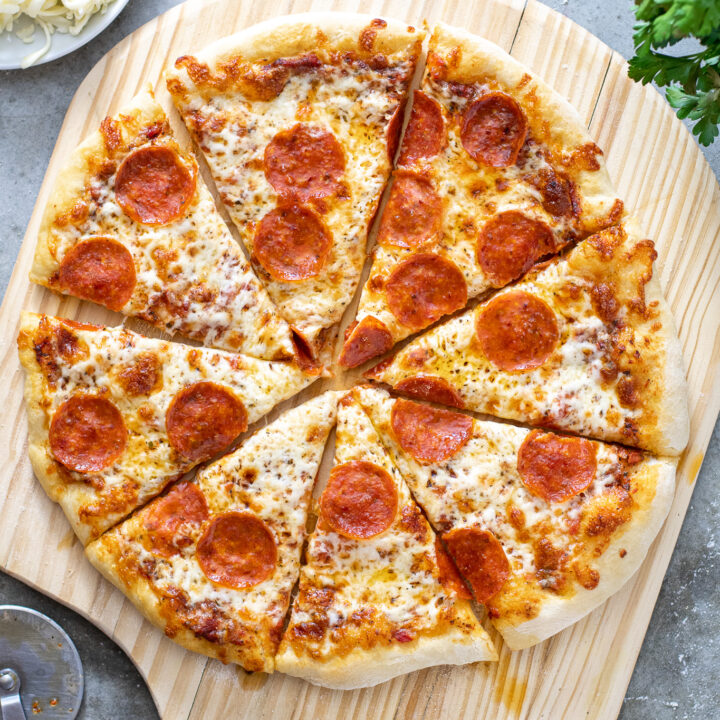

Pizza Recipe

Pizza is probably one of the most known meals in the world due the simplicity of the ingredients and preparation. It is very common to see it prepared as a fast food meal, but there are some alternatives which are more elavorated.
Ingredients
- Pizza dough
- Tomato sauce
- Sliced ham
- Cheddar cheese
- Toppings
Steps
- Preheat the dough in the oven for 10 minutes
- Cut the cheese into pices
- Put sauce on top, as well as the sliced ham and cheese
- Add any toppings you would like
- Cook in the oven until the cheese has melted
- Take out of the oven and cut it into slices
- Serve!